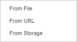
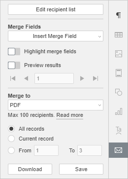
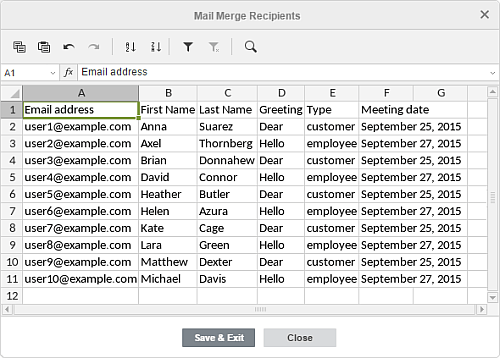
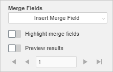
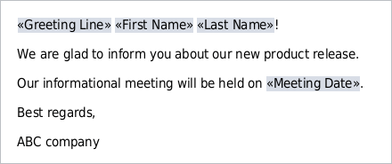
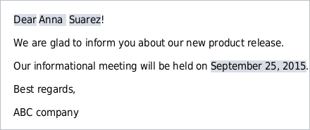
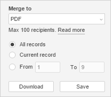
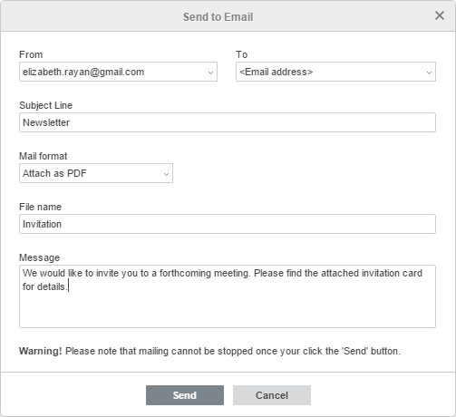

Koristite Mail Merge
Napomena: ova opcija je dostupna samo u online verziji.
Funkcija Mail Merge se koristi za kreiranje skupa dokumenata kombinujući zajednički sadržaj koji se uzima iz tekstualnog dokumenta i neke individualne komponente (varijable, kao što su imena, pozdravi itd.) koje se uzimaju iz proračunske tabele (na primer, lista kupaca). Može biti korisna ako treba da kreirate veliki broj personalizovanih pisama i pošaljete ih primaocima.
- Pripremite izvor podataka i učitajte ga u glavni dokument
- Izvor podataka koji se koristi za spajanje mora biti .xlsx proračunska tabela smeštena na vašem portalu. Otvorite postojeću tabelu ili kreirajte novu i uverite se da ispunjava sledeće zahteve.
- Tabela treba da ima zaglavlje sa naslovima kolona, jer vrednosti u prvoj ćeliji svake kolone označavaju polja spajanja (tj. varijable koje možete ubaciti u tekst). Svaka kolona treba da sadrži skup stvarnih vrednosti za jednu varijablu. Svaki red u tabeli treba da odgovara zasebnom zapisu (tj. skupu vrednosti koje pripadaju određenom primaocu). Tokom procesa spajanja, za svaki zapis će biti kreirana kopija glavnog dokumenta, a svako polje spajanja ubaćeno u glavni tekst biće zamenjeno stvarnom vrednošću iz odgovarajuće kolone. Ako planirate da šaljete rezultate putem e-pošte, tabela mora takođe da uključuje kolonu sa e-mail adresama primaoca.
-
Otvorite postojeći tekstualni dokument ili kreirajte novi. On mora sadržati glavni tekst, koji će biti isti za svaku verziju spojenog dokumenta. Kliknite na Mail Merge ikonu na Collaboration tabu gornje alatne trake i izaberite lokaciju izvora podataka: From File, From URL ili From Storage.

- Izaberite neophodni fajl ili nalepite URL i kliknite OK.
Kada se izvor podataka učita, tab Mail Merge setting će biti dostupan u desnoj bočnoj traci.

- Proverite ili izmenite listu primaoca
- Kliknite na dugme Edit recipients list na vrhu desne bočne trake da otvorite prozor Mail Merge Recipients, gde se prikazuje sadržaj izabranog izvora podataka.

-
U otvorenom prozoru možete dodati nove informacije, izmeniti ili obrisati postojeće podatke po potrebi. Za lakši rad sa podacima, možete koristiti ikone na vrhu prozora:
- i - za kopiranje i lepljenje kopiranih podataka
- i - za opozivanje i ponavljanje opozvanih akcija
- i - za sortiranje podataka unutar izabranog opsega ćelija uzlazno ili silazno
- - za omogućavanje filtera za prethodno izabrani opseg ćelija ili za uklanjanje primenjenog filtera
-
- za brisanje svih primenjenih filter parametara
Napomena: za više informacija o korišćenju filtera, molimo pogledajte odeljak Sort and filter data u pomoći za Spreadsheet Editor.
-
- za pretragu određene vrednosti i zamenu drugom, po potrebi
Napomena: za više informacija o korišćenju alata Pronađi i Zameni, pogledajte odeljak Search and Replace Functions u pomoći za Spreadsheet Editor.
- Nakon što su izvršene sve potrebne izmene, kliknite na dugme Save & Exit. Da biste odbacili izmene, kliknite na dugme Close.
- Kliknite na dugme Edit recipients list na vrhu desne bočne trake da otvorite prozor Mail Merge Recipients, gde se prikazuje sadržaj izabranog izvora podataka.
- Umetnite merge polja i proverite rezultate
- Postavite kursor miša na mesto gde treba umetnuti merge polje, kliknite na dugme Insert Merge Field na desnoj bočnoj traci i izaberite odgovarajuće polje sa liste. Dostupna polja odgovaraju podacima u prvoj ćeliji svake kolone izabranog izvora podataka. Sva potrebna polja mogu se dodati bilo gde.

- Uključite prekidač Highlight merge fields na desnoj bočnoj traci kako bi umetnuta polja bila uočljivija u tekstu.

- Uključite prekidač Preview results na desnoj bočnoj traci da biste videli tekst u kojem su merge polja zamenjena stvarnim vrednostima iz izvora podataka. Koristite dugmad sa strelicama da biste pregledali verzije spojenog dokumenta za svaki zapis.

- Da biste obrisali umetnuto polje, isključite režim Preview results, izaberite polje mišem i pritisnite taster Delete na tastaturi.
- Da biste zamenili umetnuto polje, isključite režim Preview results, izaberite polje mišem, kliknite na dugme Insert Merge Field na desnoj bočnoj traci i izaberite novo polje sa liste.
- Postavite kursor miša na mesto gde treba umetnuti merge polje, kliknite na dugme Insert Merge Field na desnoj bočnoj traci i izaberite odgovarajuće polje sa liste. Dostupna polja odgovaraju podacima u prvoj ćeliji svake kolone izabranog izvora podataka. Sva potrebna polja mogu se dodati bilo gde.
- Odredite parametre spajanja
- Izaberite tip spajanja. Možete pokrenuti masovno slanje ili sačuvati rezultat kao PDF ili DOCX fajl za štampanje ili kasnije uređivanje. Izaberite odgovarajuću opciju iz liste Merge to:

- PDF – za kreiranje jednog PDF dokumenta koji sadrži sve spojene kopije koje se kasnije mogu štampati
- DOCX – za kreiranje jednog DOCX dokumenta koji sadrži sve spojene kopije koje se kasnije mogu pojedinačno uređivati
-
Email – za slanje rezultata primaocima putem e-pošte
Napomena: email adrese primalaca moraju biti navedene u učitanom izvoru podataka i morate imati povezan bar jedan email nalog u modulu Mail na vašem portalu.
- Izaberite sve potrebne zapise koji će se primeniti:
- Svi zapisi (ova opcija je podrazumevano izabrana) – za kreiranje spojenih dokumenata za sve zapise iz učitanog izvora podataka
- Trenutni zapis – za kreiranje spojenog dokumenta za zapis koji je trenutno prikazan
-
Od ... Do – za kreiranje spojenih dokumenata za opseg zapisa (u ovom slučaju potrebno je navesti dve vrednosti: broj prvog zapisa i broj poslednjeg zapisa u željenom opsegu)
Napomena: maksimalno dozvoljen broj primalaca je 100. Ako u izvoru podataka imate više od 100 primalaca, molimo vas da izvršite mail merge u fazama: navedite vrednosti od 1 do 100, sačekajte da se proces mail merge-a završi, a zatim ponovite operaciju navodeći vrednosti od 101 do N itd.
- Završite spajanje
- Ako ste odlučili da sačuvate rezultate spajanja kao fajl,
- kliknite na dugme Download da biste sačuvali fajl na svom računaru. Preuzeti fajl ćete pronaći u podrazumevanoj Downloads fascikli.
- kliknite na dugme Save da biste sačuvali fajl na svom portalu. U otvorenom prozoru Folder for save možete promeniti naziv fajla i odrediti fasciklu u kojoj želite da sačuvate fajl. Takođe možete označiti polje Open merged document in new tab kako biste proverili rezultat kada se proces spajanja završi. Na kraju, kliknite na Save u prozoru Folder for save.
- Ako ste izabrali opciju Email, dugme Merge biće dostupno na desnoj bočnoj traci. Nakon što kliknete na njega, otvoriće se prozor Send to Email:

- U listi From izaberite odgovarajući email nalog ako imate više naloga povezanih sa modulom Mail.
- U listi To izaberite merge polje koje odgovara email adresama primalaca, ukoliko ova opcija nije automatski izabrana.
- Unesite naslov poruke u polje Subject Line.
- Izaberite format poruke sa liste: HTML, Attach as DOCX ili Attach as PDF. Kada je izabrana jedna od poslednje dve opcije, potrebno je i da navedete File name za priloge i unesete Message (tekst pisma koji će biti poslat primaocima).
- Kliknite na dugme Send.
Kada se slanje završi, dobićete obaveštenje na email adresu navedenu u polju From.
- Ako ste odlučili da sačuvate rezultate spajanja kao fajl,
- Izaberite tip spajanja. Možete pokrenuti masovno slanje ili sačuvati rezultat kao PDF ili DOCX fajl za štampanje ili kasnije uređivanje. Izaberite odgovarajuću opciju iz liste Merge to: